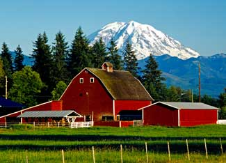

Ahh. Life in the country … peace, beauty, fun and contentment. Here is a selection of articles to help you choose the best tools and techniques to maintain and improve your property. Whether you’re just starting out or have years of experience, the articles below comprise a great reference collection.
DIY Small Barns and Storage Sheds
9/14/2007
Adequate storage space is important for any well-designed home or homestead. Whether in an urban, suburban or rural setting, we all need places to easily store and organize our stuff. This is especially true for gardeners and small farmers who have tools and machines that help them work more efficiently.
9/4/2007
There are dozens of reasons to keep a few hens in your back yard, including pest control and sheer entertainment. Fresh eggs may be the most popular reason, and eggs from hens allowed to do what comes naturally ? roam and peck at grasses, weed seeds and bugs ? not only taste better, they're better for you than eggs from cage-raised hens. Free-range eggs are higher in vitamin E and beta carotene, and lower in cholesterol. (Look for the exciting results of recent research in the October/November 2007 issue of Mother Earth News).
Build an Easy, Inexpensive Pole Barn
4/19/2007
A good pole barn can shelter livestock or provide storage for farm implements or hay and grain. Learn about building a simple, inexpensive and lasting pole barn.
Tips for Building a Small Barn
4/16/2007
A good barn is essential to a productive country home, and it doesn't have to be large or expensive to get the job done. Here are a few tips for planning and building an effective small barn.
3/27/2007
If you've ever had a good little shed, you know their usefulness ranks right up there with rakes, chain saws and duct tape. If you've never had one, you may not know what you're missing. And it's not that difficult to build a simple shed. In fact, anyone thinking about building a house someday probably should build a shed - it gives you a chance to practice many of the same design and construction techniques.
2/15/2007
Many modern American farms lack a great, classic barn. A traditional wood barn can be inexpensive, highly functional and add to your property value. Learn how to build a classic barn with this handy guide.
8/6/2005
The best way to plan for your building is to make a scale model from foam board or cardboard.
10/1/2004
Building a classic, functional barn can be easier and more affordable than you think.
2/22/2008
Choose the right utility terrain vehicle (UTV) to make chores quick and easy. UTVs are similar to a compact pickup truck with passenger seating ahead of a small bed. Most utility vehicles are powered by an efficient gasoline engine. Determine the engine and transmission that will work best for you. Four-wheel-drive is a popular option, but do you need it? Knowing what to look for will help you more carefully select the right vehicle for your situation.
Best Accessories for Your Pickup Truck
4/1/2007
No matter what you need to pull, push, haul, build or fix, there’s a pickup truck add-on that will make the job easier. Here are some of the best to consider for your truck.
Faster, Easier Mowing: Zero-turn Machines
4/1/2007
Using a machine perfectly suited to its task gives a certain special pleasure. In the past, riding mowers have been clumsy, frustratingly slow and occasionally dangerous. Then came the zero-turn mower. The zero-turn’s wheels can be driven in the same direction at varying speeds to make a gradual, precise turn, or they can turn in opposite directions, causing the machine to spin, literally, on a dime. Here’s a guide for anyone interested in purchasing a zero-turn mower, including ratings from Consumer Reports’ Web site, Greener Choices (www.greenerchoices.org). If you regularly maintain several acres, you’ll be glad you went the extra mile to find the right tool.
Mower Wisdom & Tractor Tales: Readers (and an Editor) Write In
4/1/2007
We invited readers to contribute their lawn mower stories, and you responded with enthusiasm! Here are a few horror stories, a few success stories and some general advice for anyone considering a new piece of lawn equipment.
2/23/2007
Try the DR Power Grader for smooth, hassle-free gravel driveways.
Discover Versatile Compact Tractors
4/1/2006
No single piece of equipment can save you as much time and effort on your homestead as a good tractor. Today’s tractors mow, dig, move, plow, till, scrape, grade and even generate electricity more efficiently than ever before.
How To Build Long-Lasting Gates
8/28/2007
Whether you're building a gate for a wooden privacy fence or building a swinging gate for livestock fencing, there are some basic, but important, things to remember when you're designing and building a gate. Follow these tips to make your gate last longer and reduce maintenance.
Planning and Designing Wood Fences
3/6/2007
Fences made of barbed wire, steel mesh or electric stock fencing have their place. But some houses simply don't look right without a wooden picket fence.
Fence-building Options for Livestock
3/7/2006
You've got a piece of land, but your place doesn't have good fences? Not yet, anyway. Here's the lowdown on the best types of fencing for protecting your animals.
2/1/2006
Add value and security to your land by installing a well-built fence.
8/1/2003
The easy way to keep your livestock in and predators out. In recent years, electric fencing innovations have revolutionized some forms of livestock grazing and protection, and garden crop protection, too.
How to Find Your Dream Homestead
2/22/2008
Looking for that perfect place where the sky and land are vast, the soil is fertile, the trees grow tall, and your neighbors offer genuine small-town friendliness? Before you head to the real estate office, read these tips for finding your dream homestead at a reasonable price. Good housing deals are available in many areas of the country. To attract residents, some Midwestern towns have turned to drastic measures - such as land giveaways. But even if you can’t find a free land deal, there are many ways to find an affordable homestead.
Buying Land for the Perfect Homestead
8/15/2006
Defining your priorities before buying land is crucial to homesteading success. Follow these tips for finding the perfect homestead property.
4/1/2006
Turn your dreams of country living into reality.
2/1/2006
Life is grand - we have a log cabin, a barnyard full of animals and 10 forested acres.
2/1/2008
There are many reasons you might consider keeping a couple of beehives. Not only do you benefit from the honey, but the pollination bees provide is essential to achieve good yields for some flowering crops. You don’t need a lot of land; in fact, there are many urban beekeepers. And these days, you don’t need to use dangerous chemicals to keep a healthy hive of bees. What you do need is a little basic equipment to get started. The spring is a good time to start a new hive, just after the first frost.
Getting Started with Livestock and Farming
10/10/2005
Here's how to get started with livestock for your modern homestead.
2/1/2008
With the right generator, you’ll be prepared when storms or blackouts leave you without electricity. Learn how to choose the best generator for your needs, including fuel and safety tips.
Varmint Relocation Program: How to Trap, Humanely
9/28/2007
So, a little weasel is getting your chickens. The raccoons are eating more of your sweet corn than you are. Or maybe a skunk is stealing eggs. Like most folks, you enjoy having wildlife nearby, but you have your limits. Live traps can be a diplomatic solution.
5/23/2006
Dogs don't have to be large, imposing breeds to be good guard dogs. With a little training, you can make your pet a safe and loyal guardian.
Choosing and Training a Watchdog
4/1/2006
Make your pet a safe and loyal guardian
The Truth About Septic Systems
2/1/2008
Homeowners and small communities across the nation are being persuaded to install expensive, complicated and often unnecessary wastewater disposal systems. This article explains how septic systems and alternatives work and provides good background information in the event that you’re in a similar situation. Think it couldn’t happen to you? Read what others are saying about their situations.
9/25/2007
Let's pour some concrete! Could you use some paving stones for a backyard path? Maybe you'd like to add a concrete pad at the bottom of your deck stairs. What about that one area of your driveway or sidewalk that's cracked and broken?
Build a Simple Garden Bench and Table
4/9/2007
One of the best ways to make your yard and garden more enjoyable is to provide several spots where you can sit to rest, enjoy the view and listen quietly to the birds and the wind. You can make a super-simple bench by standing a couple of large log sections on end, then attaching a sturdy plank onto the log 'legs' using long galvanized spikes or screws.
Meld Metals with Welding and Brazing
2/1/2007
There’s never been a better time to add brazing and welding skills to your homesteading repertoire. Brazing and welding are all about joining metal parts quickly, permanently and with great strength - you’ll find that they can revolutionize the way you maintain and improve your homestead.
4/1/2006
Create your own spot for summer fun, as well as a water source for irrigation, livestock and fighting fires.
6/1/2005
Here's how to install the right-sized culvert so you can safely travel over streams and ditches.
How to Paint Your House (and why you may not want to paint your barn)
8/1/2007
To maximize the life of your outdoor painting projects, follow these expert steps for prep work, application and choosing the right paint for the job.
How to Start a Bootstrap Homestead Business
12/26/2006
There are hundreds of ways to generate cottage industry income while homesteading. The challenge is to create a stable market for your bootstrap products or services.
3/17/2006
Follow these tips to prevent and thaw frozen water pipes.
How to Stop Dogs from Digging Holes
2/3/2006
Do your dogs dig holes in the same location? Try this simple tip to protect your lawn from digging dogs.
Squirrel-Proof Your Bird Feeder
1/3/2006
This homemade bird food won't attract squirrels to your feeders, and it's easy an inexpensive to make.
4/1/2005
Tractors make country life easier, more enjoyable and productive, but they also make it more dangerous. One person dies in a tractor accident nearly every day in the United States, according to the National Institute for Occupational Safety and Health (NIOSH). This article explains steps you can take to be safer while operating a tractor.
How to Choose the Right Saw for the Job
4/2/2008
There are dozens of types of saws, and scores of variations of each. Whether you prefer hand tools for control and safety, or power tools for efficiency and speed, you can learn more about some of the most common and most useful saws in this introduction.
2/27/2007
Many people with several acres eventually want to raise livestock. To contain animals on a pasture, you will need a good fence. What follows are a few of the tools that will help you build a good fence and maintain it over time.
The Best Way to Sharpen Tool Blades
2/1/2007
Learn how to properly sharpen woodworking tools, including chisels.
2/1/2007
Chisels are essential tools in woodworking, woodcarving, timber framing and masonry. Learn how to choose the right chisel for each job, and how to sharpen chisels for best results.
9 Essential Wrenches and Pliers
6/1/2006
Twist, turn, tighten or loosen anything with these trusty tools.
2/1/2006
Many people with several acres eventually want to raise livestock.
Is Wood Heating Right for You?
3/31/2008
If you're looking for a way to reduce your winter heating bills, consider wood heat. It's a green option because wood is a renewable fuel. If you live in a forested area and can cut and split your own wood, heating with wood also can save you money.
How to Manage Woods for Fun and Profit
12/4/2007
A woodlot, whether three acres or 100 acres, can provide a myriad of things: fun and recreation; a bootstrap business for firewood and lumber; and the sheer satisfaction of having trees nearby. But to get the most out of your woodlot requires some forest management.
How to Maintain Axes and Chain Saws
11/23/2007
Perhaps all the firewood you'll need for this winter is split and neatly stacked. But you may need to cut up a fallen tree or split kindling. Is your chain saw ready? Is you axe sharp? Here are some tips to keep your woodcutting equipment in good condition.
11/9/2007
Chopping firewood is not complicated, but you should know a few things before you take ax in hand. Remember: safety first. Select the right logs for splitting and choose an appropriate chopping block.
3/15/2007
A well-sharpened chainsaw can save you time and energy on a farm or homestead. Learn how to sharpen a chainsaw and get the fastest, safest use out of this essential tool.|
 ISTOCKPHOTO/ZUBIN LI Land, a home, barns, sheds, livestock, fences and equipment - all are part of the rural lifestyle. |
|
|